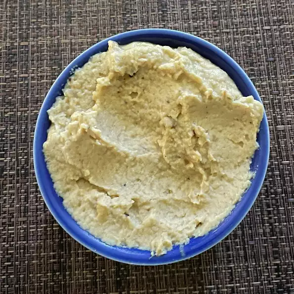

Basic hummus

Description
This basic recipe for hummus is quick and easy, and it tastes great with pita bread or veggies.
Ingredients
- 2 cloves garlic, peeled and crushed
- 2 tablespoons olive oil
- 1 (15 ounce) can garbanzo beans, drained, liquid reserved
- 1 tablespoon sesame seeds
- salt and pepper to taste
Steps
- In a medium saucepan over medium heat,
cook and stir the garlic in olive oil for approximately
3 minutes, until tender.
- Place garbanzo beans in a blender or food processor with approximately 1 teaspoon reserved liquid.
Process until smooth. Mix in the garlic, sesame seeds, salt and pepper.
Blend to desired consistency, increasing the amount of reserved garbanzo bean liquid as desired.
Chill in the refrigerator until serving.